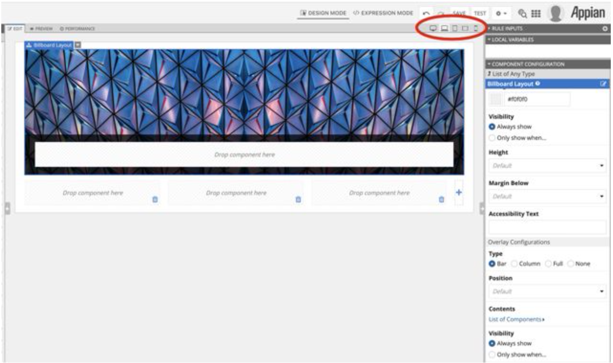
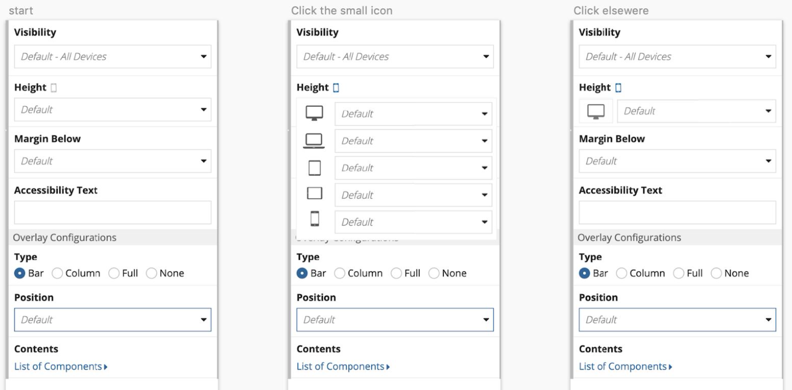
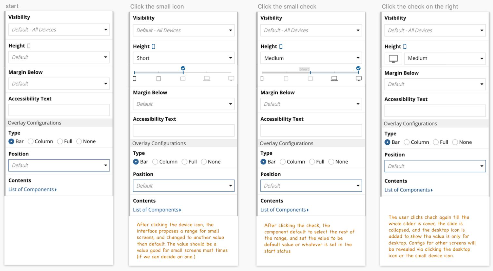
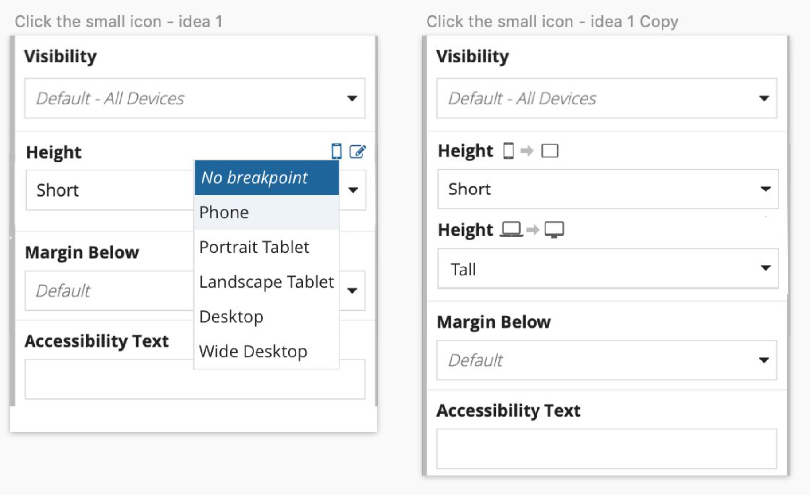
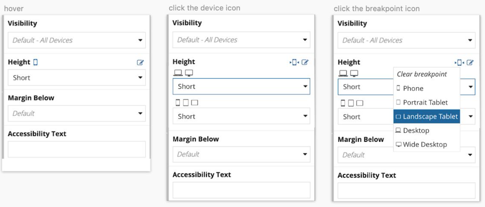

Appian is a low-code platform where business developers can build custom BPM applications without extensive coding. User-facing interfaces can be easily created by selecting and combining ready-to-use UI components. The UI components are available with a set of configuration options. Depending on business needs, components' functions can be configured to display data or trigger a process. The look of the components is also configurable to display in different styles.

A screenshot of component interface. Image source: https://docs.appian.com/suite/help/17.3/Interface_Designer.html
My work is to develop the design system, a library of components, supporting a wide range of business processes. I also ship UI features that extend low-code capabilities, such as the responsive feature I am going to write about.
Enabling responsive design didn’t come straight as a requirement.
We often see our customer struggling in making UIs look good on small screens as it is on desktop. As for the goal of low-code, we attempted to make the UI automatically adapt to screen sizes.
In the past, we provided layout component to automatically stack columns on small screens. It was helpful in making contents fit on smaller screens. However, the automated result often fails to place the content as desired on all devices.

Image source: http://www.dynamicconsultant.org/responsive-layout-services/
The responsive positioning varies case by case, which can't be determined programmatically. Users need a powerful yet easy-to-use way to configure interfaces that can be used on mobile devices.
- Flexibility to create desired UIs on different sized screens.
- Integrability to existing component framework.
Design Goals
Requirement Gathering Process
The design goal is usually a compound result of internal requests, customer complains, data metrics and sometimes business partner’s observation.
Engineer department collects these informations, combines related use cases, then translate them into features.
I did competitive analysis on products and technologies help create responsive UIs. Put myself into Appian developer’s shoe to brainstorm the tool that achieves their goals.
- Squarespace. Allows users to configure UIs for different devices in separate tabs. Matches UI designers mental modal. Didn't introduce responsive concept.
- Salesforce. Configures column width with its percentage to screen width. The values need to match with sibling columns.
- Bootstrap. Default to split space with sibling columns. Specified configurations needed to fix width. Uses breakpoint.
- CSS Flexbox. Configuration on both flex layout and items. Learning curve is steep.
Competitors
Comparing the competitors help me pin down the unique needs of Appian users. Adding them to my design goals.
- Flexibility to create desired UIs on different sized screens.
- Integrability to existing component framework.
- Easy for non-technical users to start.
- Simple configuration steps.
Design Goals
Ideation Process
I usually time-box brainstorming , to generate as many ideas as possible in given time.
Once I have a good number of design options, I start to draft artifacts to present with PMs, designers and directors, or in a shared document to collect feedback from broader audience.
I made a list of assumptions in my first round of prototyping, to be verified in later design stages. The assumptions lead to questions that help me dig deeper to understand the users.
-
Appian users have basic knowledge of web responsive design. They just want to transform their mobile and desktop design in Sketch into a working UI in the system.
➜ How familiar are they with web responsiveness? -
Their focus can be one or many screen sizes. They want to make UIs great on their focused device, and usable on other devices when they don't focus on both mobile and desktop.
➜ How many configuration steps are they willing to take? -
Regular sized phone and desktop are the common use cases. Although there are a variety of device sizes in the market, Appian users shouldn't check their design on all of them.
➜ How many types of screen sizes do they usually care about?
Assumptions
Prototype Process
Pens, Sketch, HTML + CSS can all be my prototyping vehicles to present ideas. Pens are good for initial ideation, or response immediately to critiques.
HTML + CSS is to show interactions, give the reviewer a real feel of UI transitions.
Idea 1: Configure all attributes in device modes

✔️ Intuitive for first-time user to create UIs for different devices.
✔️ Immediate preview on selected device, easy to start
✖️ Plenty of configurations need to be done for each device.
✖️ Hard to implement on existing framework.
Idea 2: Select attribute value for each device width

✔️ Hide default configurations, main a clean interface for other attribute settings.
✖️ In the five selection input boxes, three are mobile device. Repetitive selection if one configuration should apply on all mobile device.
Explotary idea: Range selection

✔️ Range selection reduces configuration steps.
✖️ High risk. Novel interaction may confuse new users, end up a failure. A lot of usability testing needed.
With my first round of prototype presented, I realize stakerholder's expectation on the configuration simplicity is higher than my assumption. I got my assumption questions answered and decided to investigate the range selection idea. I reorganized my goal priority, then move on to the next iteration.
Design Goal Prioritization
Simple configuration > Easy to start > FlexiblitySince idea 1 is excluded due to implementation difficulty, and the rest has similar development effort, integrability isn’t included in this prioritization.
Feedback is very valuable in my design process
Presenting the design sparks thoughts in the group. It is another chance for me to explore their needs deep down and refine my design.
In addition, people's questions and concerns push me to perfect my design. Diverse prospetives inspire me to solve problems in innovative ways.
Idea 1
Idea 2
- Self Evaluation I evaluate my design based on the design goals. When multiple goals conflicted to each other, I follow prioritization.
- Guerrilla Testing In the 2nd iteration, both ideas fulfilled the design goals. I did rapid guerrilla testing, found out Idea 2 matches regular user's expection more.
- Usability Testing We recruit participants based on their familiarity with our product. Recruit expert user to test the advanced configuration of one feature. Recruit new users to test intuitiveness and on-boarding experience of our feature.
- Dog-fooding When we have a new feature, before shipping to customers, we use it on our internal tools first, and gather first-hand feedback from our employees.
Design Evaluation
This design work made me value the importance of first-hand user information, and be extra careful in making assumptions in such cases. In this cross-platform feature, our data metrics weren't able to provide useful insights. The feature design heavily relied on partner's observation and design team's experience working with customers. Their narration can be biased or mixed with their assumptions. Asking the right questions to narrators is as important as interviewing an end user. This experience also made me think, firstly to improve the data metrics system, in order to capture holistic information. Secondly, I hope to develop rapport with partners and customers to get first-hand design insights, in the furture.